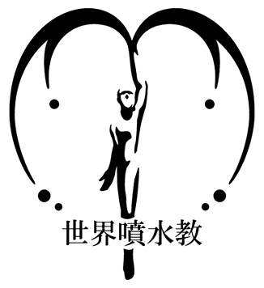

世 界 噴 水 教 へ よ う こ そ ！

おしらせ
向寒の候、ますます御健勝のこととお慶び申し上げます。
さて、来る11月24日、九州大学大橋キャンパスの噴水特設会場にて、
第133回噴水教大説明会が開催されます。
噴水教の理念、歴史、すばらしさを皆様に分かりやすくお教えします。
この講演が終わる頃には、あなた方は幸せを得ることができるでしょう。
また、併設された物販コーナーでは、さまざまな噴水教グッズを販売します。
万障お繰り合わせの上、ぜひ皆さんお越しください。
更新履歴
11/13 リンクページを追加しました
11/13 今後の活動内容を追加しました
10/04 信者の声を追加しました
10/02 噴水教ブログを設置しました
09/19 噴水教グッズのお申し込みを一時停止しました
08/31 信者の声を追加しました
08/18 ホームページリニューアル
今後の活動内容
第133回 噴水教大説明会が行われます。
日時･11月26日 19時(午後7時)より
場所･九州大学大橋キャンパス･噴水特設会場にて
お問い合わせはこちらまで
funsuikyo(at)yahoo.co,jp
Copyright (c) 2007 世界噴水教 All Rights Reserved. 無断転載・転用・引用禁止